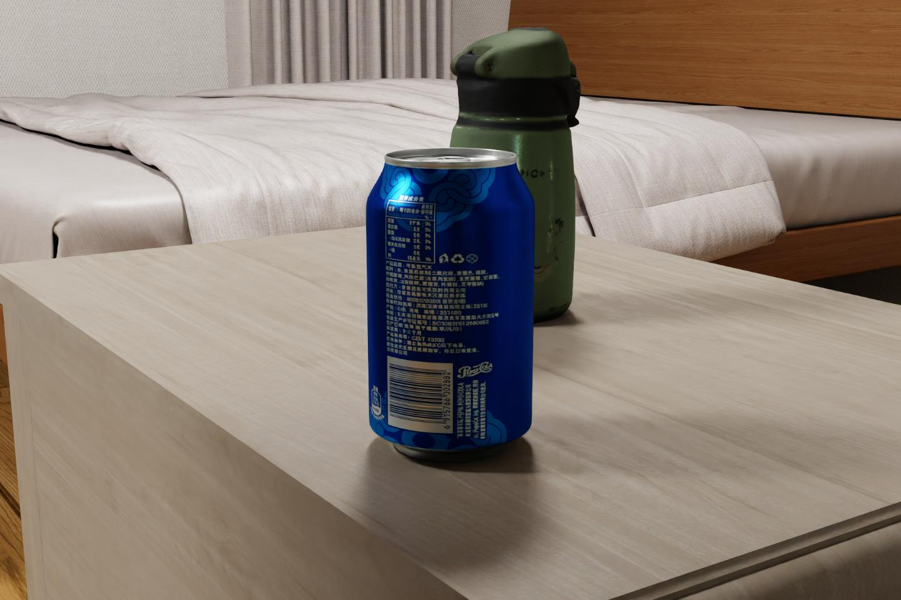
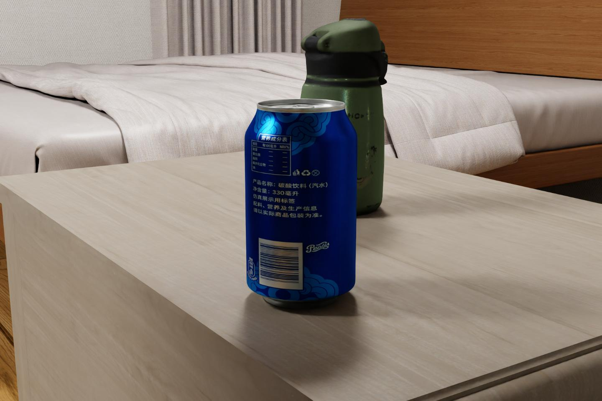
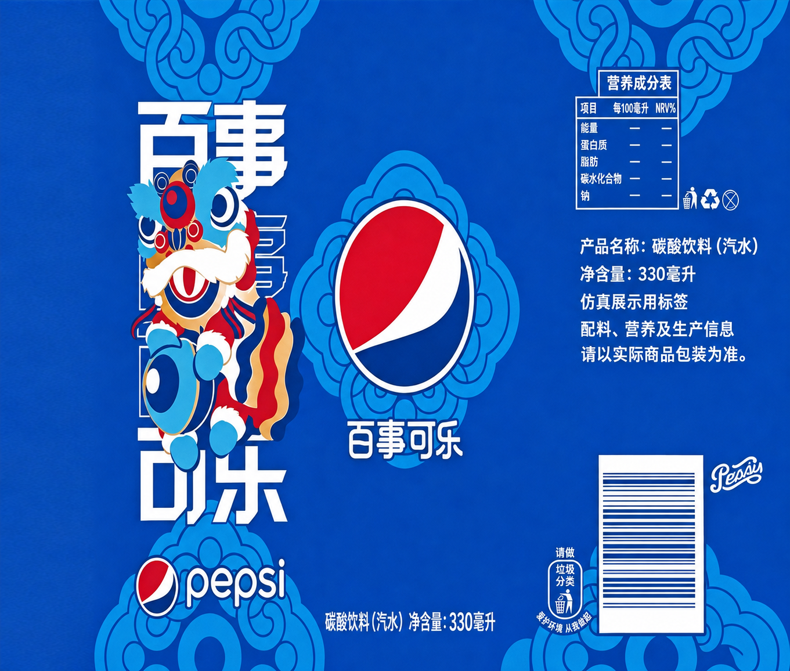

Genie Sim · Texture study
A clearer
label.
Repairing malformed lettering while keeping the original can, its UV layout, and its place in the room. Drag the slider to inspect the change.
ACTUAL ISAAC SIM RENDERSSAME GEOMETRY · CAMERA · LIGHTING


OriginalRefinedReadable Chinese typography
Malformed glyphs and crowded fine print were replaced with clear, complete demonstration text.
A material override
The source texture is preserved. The replacement albedo is applied to the native can’s original UV coordinates.
Honest about missing information
Unrecoverable nutrition values remain unspecified. The label identifies itself as a simulation demonstration.
The flat texture
Inspect the
printed detail.
Created with the built-in image generation tool, then checked on the native 3D asset. The images above are static renders of the settled room.
Download refined PNG ↓
